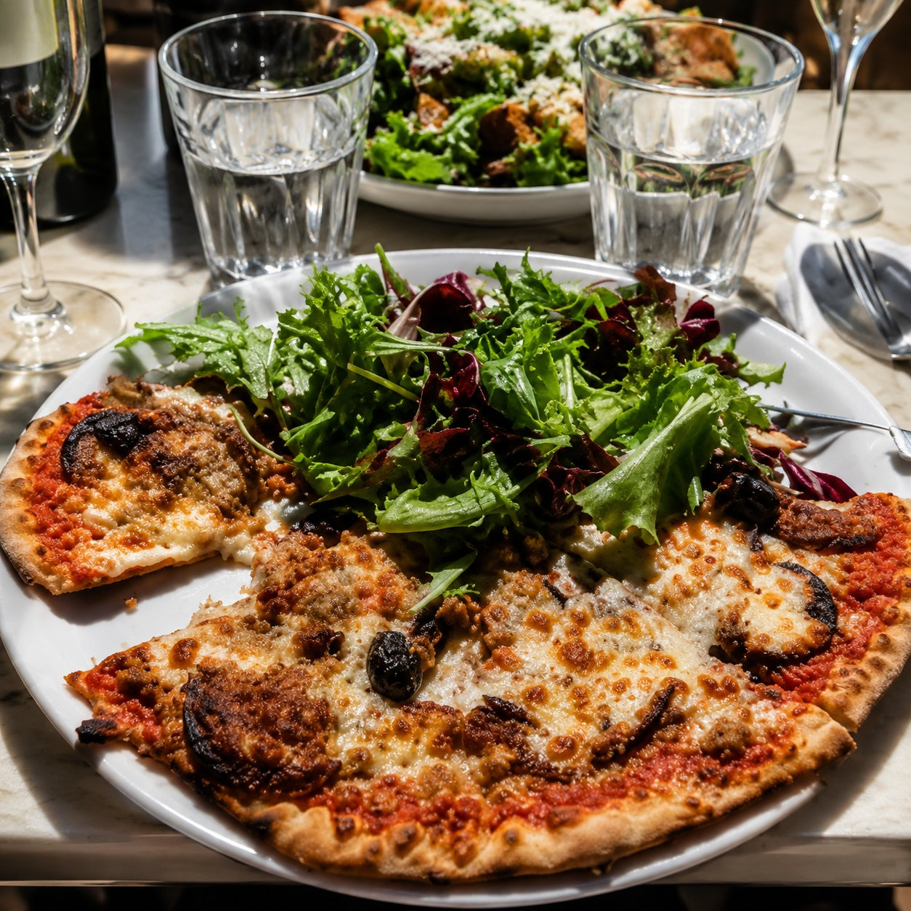
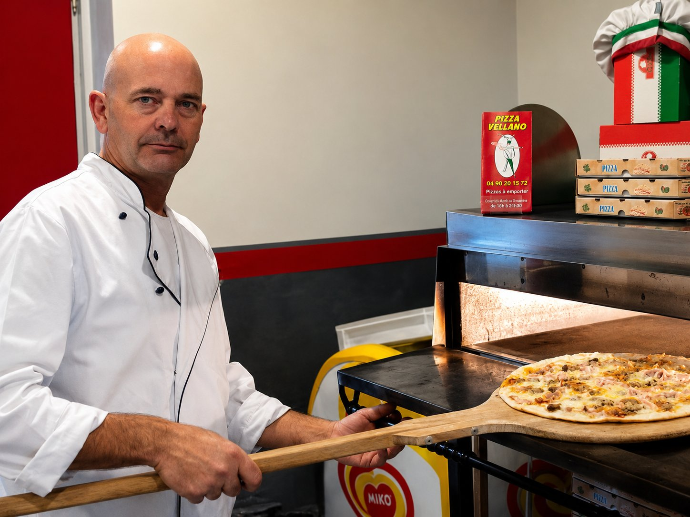

La tradition italienne au cœur de Velleron
Des pizzas généreuses, une pâte fine et une ambiance conviviale, à déguster sur place ou à emporter.

Une pizzeria de village, à taille humaine
Installée au centre de Velleron, Pizza Vellano propose une large sélection de pizzas préparées dans un esprit simple, généreux et convivial. Des grands classiques aux recettes maison, chacun peut y retrouver les saveurs qu'il aime, sur place ou à emporter.
Aux commandes, Jean-Marc accueille chaque client seul, en cuisine comme en salle : il prépare des pizzas depuis plus de vingt ans.
Un accueil chaleureux
Jean-Marc prend le temps d'accueillir chaque client, habitué ou de passage.
Un large choix
Des classiques aux spécialités maison, une carte pensée pour tous les goûts.
Des pizzas généreuses
Une pâte fine et des garnitures généreuses, préparées avec soin.
Toute la carte Pizza Vellano
Parcourez nos pizzas par catégorie, filtrez les recettes végétariennes ou cherchez directement un ingrédient.
Le soin apporté à chaque pizza
Photo à venir — préparation de la pâte
Emplacement réservé
Une pâte préparée avec soin
Chaque pizza part d'une pâte fine, travaillée avec attention avant d'être garnie.
Photo à venir — garnitures fraîches
Emplacement réservé
Des garnitures généreuses
Des recettes classiques et des spécialités maison, garnies sans compter.

Jean-Marc, seul aux commandes
Depuis plus de vingt ans, Jean-Marc prépare chaque pizza et accueille chaque client, seul en cuisine comme en salle.
Un aperçu de Pizza Vellano
Certaines photographies ci-dessous sont déjà de vraies images de l'établissement ; les autres sont des emplacements temporaires, en attente.
Pizza Vellano voyage avec vous
Depuis des années, nos clients glissent un menu Pizza Vellano dans leurs valises avant de partir en vacances, d'assister à un événement ou de découvrir un nouvel endroit.
Une fois arrivés, ils le photographient devant un monument, dans un stade ou au cours d'une rencontre inattendue. Grâce à eux, un petit morceau de notre pizzeria de Velleron voyage partout en France et dans le monde.
Chaque photo raconte un voyage, un souvenir et un morceau de l'histoire de Pizza Vellano.
Grâce à vous, Pizza Vellano a déjà vibré avec l'OM au Vélodrome, assisté à des concerts, rencontré Freddy Krueger, visité Madame Tussauds, admiré la fontaine de Trevi, découvert la Sagrada Família, contemplé Barcelone depuis le parc Güell et fait une halte à Saint-Tropez…
Et vous, où ferez-vous voyager Pizza Vellano ?
Le prochain voyage sera peut-être le vôtre
Vous partez en vacances, assistez à un événement ou découvrez un endroit exceptionnel ? Emportez un menu Pizza Vellano, photographiez-le et envoyez-nous votre plus beau souvenir. Votre photo pourra rejoindre notre album de voyage.
Visitez Pizza Vellano depuis chez vous
Une visite virtuelle immersive sera bientôt disponible. En attendant, le bouton ci-dessous vous indique son état.
Visite virtuelle à venir
Cette visite n'est pas encore disponible. Revenez bientôt, ou contactez-nous par téléphone pour découvrir la pizzeria en attendant.
Retrouvez-nous à Velleron
Retrouvez Pizza Vellano au cœur de Velleron, place de la Poste. Pour passer commande ou vérifier les horaires du jour, contactez directement la pizzeria.
Adresse
40 place de la Poste, 84740 Velleron
Téléphone
Horaires
Ouvert du mardi au dimanche, midi et soir — fermé le lundi
Horaires donnés à titre indicatif, à confirmer directement auprès de l'établissement avant votre visite.
Ce que nos clients apprécient
Retrouvez les avis déposés par nos clients directement sur Google et TripAdvisor — le nombre d'avis et la note y sont mis à jour en continu, contrairement à un chiffre affiché ici qui deviendrait vite obsolète.
Envie d'une pizza ce soir ?
Appelez-nous pour commander sur place ou à emporter — nous serons ravis de vous accueillir.